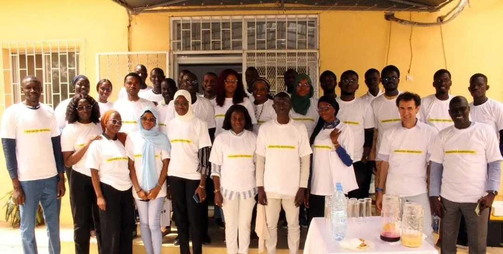

Former
Trois spécialités en formation initiale, ouvertes aussi aux professionnels en formation continue et certifiante. Les cours se tiennent sur le campus, avec des salles de travaux pratiques et un laboratoire de réalité virtuelle et augmentée.

nic.sn — registre du domaine national
Le CURI forme au développement, au multimédia et au commerce en ligne à l'Université Cheikh Anta Diop — et gère le domaine .sn, confié à l'UCAD depuis 1993.
Le CURI enseigne les technologies de l'Internet, et il en fait tourner une partie : le registre du domaine national.
Trois spécialités en formation initiale, ouvertes aussi aux professionnels en formation continue et certifiante. Les cours se tiennent sur le campus, avec des salles de travaux pratiques et un laboratoire de réalité virtuelle et augmentée.
La gestion du domaine national est confiée à l'UCAD depuis 1993 et portée par NIC Sénégal. Le centre travaille avec l'ICANN, l'AFNIC et l'AFTLD, et organise des ateliers DNS et DNSSEC pour les professionnels de la région.
Deux ans de formation initiale, un diplôme, un métier.
Concevoir une application complète et la mettre en production : interface, serveur, base de données, téléphone.

Produire les contenus et les interfaces d'un site : graphisme, audiovisuel, intégration et publication en ligne.

Lancer et piloter une activité en ligne : stratégie, acquisition, contenus, paiement et mesure des résultats.

Du premier cours au projet de fin d'études, le déroulé est le même pour les trois spécialités.
Des séances en salle, suivies d'exercices sur machine dans les salles du centre.
Un suivi rapproché par les enseignants, en petit groupe.
Salles équipées pour le réseau, le développement, et le laboratoire de réalité virtuelle et augmentée.
Un travail en équipe rendu et soutenu à la fin de chaque semestre.
Journées d'intégration, hackathons et ateliers ouverts aux étudiants.
Le travail qui clôt le cursus et sert de première référence professionnelle.
Le centre travaille avec les organisations qui administrent les noms de domaine en Afrique et dans le monde.
Ces quatre organisations figurent sur les supports des ateliers DNS et DNSSEC organisés par le centre. La liste complète des partenaires reste à compléter avec la direction.
Ateliers techniques, hackathons et moments de promotion.

7 – 11 novembre 2022
Une conférence publique au Centre de conférences UCAD 2, puis quatre jours d'atelier dans la salle de formation du centre, avec NIC Sénégal, l'ICANN, l'AFNIC et l'AFTLD.
Lire l'événement
Date à confirmer
Le centre accueille des hackathons avec ses partenaires. Le détail de cette édition reste à compléter.
Date à confirmer
Le centre dispose d'un laboratoire AR/VR, utilisé en atelier avec les étudiants et des publics invités.
Écrivez-nous ou passez à UCAD 3 : l'équipe répond aux questions sur l'admission, le déroulement des cours et la formation continue.